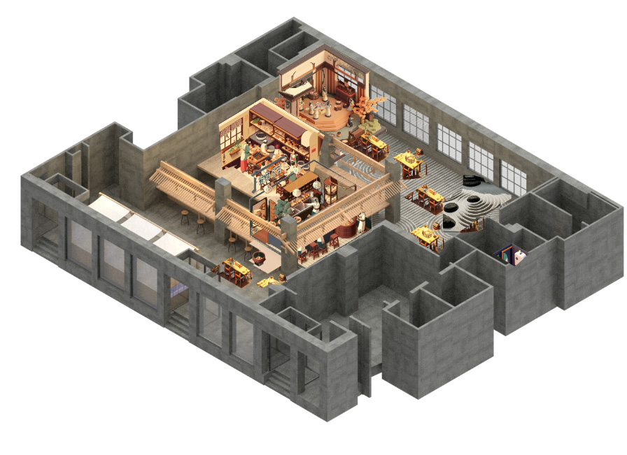

01
Izakaya & Bar
INTERSECTION — Across cultures & spaces, between day & night
A diner of dual identities: by day a bright izakaya-inspired cafe with natural light and warm tones; by night a neon-lit futuristic bar. A compact bubble tea bar anchors the entry, while modular booths, stage, and an "Instagrammable" social space create both intimacy and collective vibrancy.